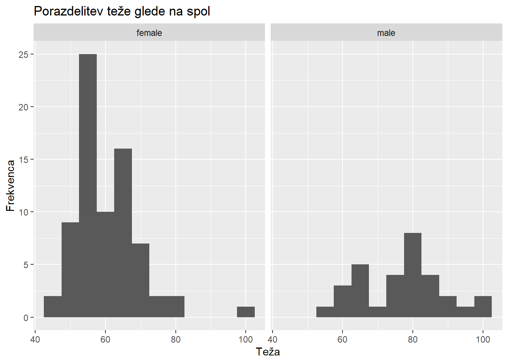
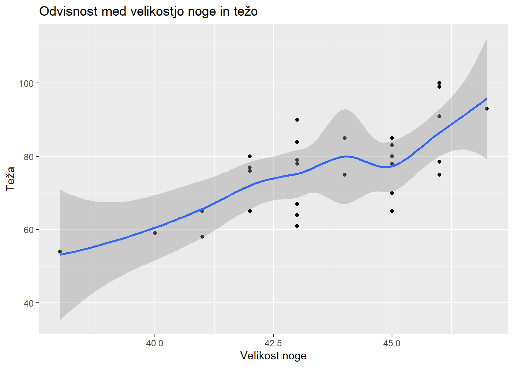

library(tidyverse)
library(ggplot2)Kviz 3
Statistika 2024/25
Uporabljeni paketi
Branje podatkov
data <- read.delim("data.txt")
x <- 8 # prezadnja števka
z <- 2 # zadnja števka
data[unique(c(seq(x, nrow(data), 10), seq(z, nrow(data), 10))), ] %>%
as.data.frame() -> my.data
nrow(my.data)[1] 105Preimenoval bom stolpce za lažje delo.
names(my.data) <- names(my.data) |>
gsub(pattern = "\\.+", replacement = "_") |>
gsub(pattern = "_$", replacement = "")
names(my.data) [1] "Timestamp" "Age"
[3] "Sex" "Height"
[5] "Weight" "Shoe_size"
[7] "Eye_Color" "Smoking"
[9] "Smoking_How_many_per_day" "Videogames"
[11] "TV_hours_per_week" "Internet_hours_per_week"
[13] "Books_how_many_per_year" "Sport_hours_per_week"
[15] "Pet" "Faculty"
[17] "Friends_on_Facebook" "Sleep_hours_per_night"
[19] "PetBird" "PetCat"
[21] "PetDog" "PetFish"
[23] "Petno" "PetOther"
[25] "PetRodent" Naloga 1
Pri \(\alpha = 0.01\) preverite ali se številka čevlja razlikuje pri študentih in študentkah.
podatki
df <- select(my.data, Sex, Shoe_size) |>
filter(Sex %in% c("male", "female"))
df |> summarise(
n = n(),
povprecje = mean(Shoe_size),
"std. odklon" = sd(Shoe_size),
.by = Sex
) Sex n povprecje std. odklon
1 female 74 38.68243 1.383796
2 male 31 43.61290 2.044137test korelacije
sz_M <- my.data[my.data$Sex == "male", "Shoe_size"]
sz_F <- my.data[my.data$Sex == "female", "Shoe_size"]
t.test(sz_M, sz_F, sig.level = 0.01, alternative = "two.sided")
Welch Two Sample t-test
data: sz_M and sz_F
t = 12.301, df = 41.988, p-value = 1.649e-15
alternative hypothesis: true difference in means is not equal to 0
95 percent confidence interval:
4.121551 5.739391
sample estimates:
mean of x mean of y
43.61290 38.68243 Visoka \(p\) vrednost nakazuje na to, da odstopanja niso statistično značilna - \(H_0\) obdrđimo. Velikost čevlja se med študenti in študentkami razlikuje.
Naloga 2
Predstavite podatke za številko čevlja in težo z ustreznim grafom. Preverite ali je številka čevlja linearno odvisna od teže v populaciji študentov. Interpretirajte rezultate. Komentirajte ali je predstavljen problem smiselno zastavljen.
- \(H_0:\) številka čevlja in teža sta linearno odvisni spremenljivki
- \(H_1:\) številka čevlja in teža nista linearno odvisni spremenljivki
graf
ggplot(df, aes(x = Shoe_size)) +
geom_histogram(binwidth = 1) +
facet_wrap(~ Sex, ncol = 2) +
labs(
x = "Velikost čevlja",
y = "Frekvenca",
title = "Porazdelitev velikosti čevlja glede na spol"
)graf
df2 <- select(my.data, Sex, Weight) |>
filter(Sex %in% c("male", "female"))
ggplot(df2, aes(x = Weight)) +
geom_histogram(binwidth = 5) +
facet_wrap(~ Sex, ncol = 2) +
labs(
x = "Teža",
y = "Frekvenca",
title = "Porazdelitev teže glede na spol"
)
test korelacije
w_M <- filter(my.data, Sex == "male") |>
select(Weight) |>
unlist() |>
setNames(NULL)
cor.test(
x = sz_M,
y = w_M,
method = "pearson",
alternative = "two.sided"
)
Pearson's product-moment correlation
data: sz_M and w_M
t = 5.2044, df = 29, p-value = 1.437e-05
alternative hypothesis: true correlation is not equal to 0
95 percent confidence interval:
0.4518670 0.8419518
sample estimates:
cor
0.6949375 Korelacija \(\approx\) 0.695 je nadpovprečna, zato lahko trdim, da sta teža in velikost noge linearno korelirani. Podobno je razvidno iz spodnjega grafa. Hipotezo \(H_0\) zavržemo v prid alternativne domneve \(H_1\).
graf
ggplot(
data.frame(
"ShoeSize" = sz_M,
"Weight" = w_M
),
aes(x = ShoeSize, y = Weight)
) +
geom_point() +
geom_smooth() +
labs(
title = "Odvisnost med velikostjo noge in težo",
x = "Velikost noge",
y = "Teža"
)`geom_smooth()` using method = 'loess' and formula = 'y ~ x'
Naloga 3
Preverite ali sta Teža in število ur športa na teden monotono povezani slučajni spremenljivki v populaciji.
- \(H_0:\) število ur športa na teden in teža sta monotono povezani spremenljivki
- \(H_1:\) število ur športa na teden in teža nista monotono povezani spremenljivki
df3 <- select(my.data, Weight, Sport_hours_per_week, Sex)test korelacije za študente
cor.test(
x = {
filter(df3, Sex == "male") |> select(Sport_hours_per_week) |> unlist()
},
y = {
filter(df3, Sex == "male") |> select(Weight) |> unlist()
},
method = "spearman",
alternative = "two.sided"
)Warning in cor.test.default(x = {: Cannot compute exact p-value with ties
Spearman's rank correlation rho
data: { unlist(select(filter(df3, Sex == "male"), Sport_hours_per_week)) } and { unlist(select(filter(df3, Sex == "male"), Weight)) }
S = 3199, p-value = 0.05001
alternative hypothesis: true rho is not equal to 0
sample estimates:
rho
0.3550325 Vrednost 0.05 ne implicira monotone korelacije med težo in število ur športa na teden v populaciji študentov. To je razvidno tudi iz razpršenosti točk na grafu.
\(H_0\) zavržemo v prid alternativne domneve \(H_1\), saj so odstopanja statistično značilna.
graf monotone korelacije med študenti
ggplot(
data.frame(
"w" = { filter(df3, Sex == "male") |> select(Weight) |> unlist() },
"spw" = { filter(df3, Sex == "male") |> select(Sport_hours_per_week) |> unlist() }
),
aes(x = spw, y = w)
) +
geom_point() +
geom_smooth() +
labs(
title = "Povezanost med težo noge in števila ur športa na teden v populaciji",
x = "Število ur športa na teden",
y = "Teža"
)`geom_smooth()` using method = 'loess' and formula = 'y ~ x'test korelacije za študentke
cor.test(
x = {
filter(df3, Sex == "female") |> select(Sport_hours_per_week) |> unlist()
},
y = {
filter(df3, Sex == "female") |> select(Weight) |> unlist()
},
method = "spearman",
alternative = "two.sided"
)Warning in cor.test.default(x = {: Cannot compute exact p-value with ties
Spearman's rank correlation rho
data: { unlist(select(filter(df3, Sex == "female"), Sport_hours_per_week)) } and { unlist(select(filter(df3, Sex == "female"), Weight)) }
S = 71296, p-value = 0.6365
alternative hypothesis: true rho is not equal to 0
sample estimates:
rho
-0.05585297 Vrednost 0.64 implicira, da obstaja visoka monotona korelacija med težo in število ur športa na teden v populaciji študentk. Točke na grafu so manj razpršene, kot pri študentih.
\(H_0\) obdržimo, saj odstopanja niso statistično značilna.
graf monotone korelacije med študentkami
ggplot(
data.frame(
"w" = { filter(df3, Sex == "female") |> select(Weight) |> unlist() },
"spw" = { filter(df3, Sex == "female") |> select(Sport_hours_per_week) |> unlist() }
),
aes(x = spw, y = w)
) +
geom_point() +
geom_smooth() +
labs(
title = "Povezanost med težo noge in števila ur športa na teden v populaciji",
x = "Velikost noge",
y = "Teža"
)`geom_smooth()` using method = 'loess' and formula = 'y ~ x'Naloga 4
Preverite ali je zastopanost domačih ljubljenčkov v populaciji študentov različna od: pes 41%, mačka 33%, riba 10%, drugo 16%.
studenti <- filter(my.data, Sex == "male") |> select(Pet)
slice_sample(studenti, n = 10) Pet
1 Dog
2 no
3 no
4 no
5 no
6 no
7 no
8 Cat
9 Cat, Fish, Other
10 Cat, Dog, Fishpets <- studenti |>
separate_wider_delim(
delim = ", ",
cols = Pet,
names = c("a", "b", "c"),
too_few = "align_start"
) |>
map_df(str_to_lower)
slice_sample(pets, n = 10)# A tibble: 10 × 3
a b c
<chr> <chr> <chr>
1 cat <NA> <NA>
2 cat <NA> <NA>
3 other <NA> <NA>
4 cat dog fish
5 no <NA> <NA>
6 no <NA> <NA>
7 cat dog fish
8 dog bird <NA>
9 no <NA> <NA>
10 dog <NA> <NA> # funkcija vrne število vrstic s `pet`
pet_count <- \(pet) {
if (!is.character(pet)) {
message("pet must be a character vector.")
return(0)
}
pets |>
unlist() |>
grep(pattern = pet) |>
length()
}pet_types <- c("dog", "cat", "fish", "other")
pets_freq <- sapply(pet_types, pet_count)
pets_freq dog cat fish other
9 8 6 5 chisq.test(x = pets_freq, p = c(0.41, 0.33, 0.10, 0.16), rescale.p = T)Warning in chisq.test(x = pets_freq, p = c(0.41, 0.33, 0.1, 0.16), rescale.p =
T): Chi-squared approximation may be incorrect
Chi-squared test for given probabilities
data: pets_freq
X-squared = 4.4197, df = 3, p-value = 0.2196